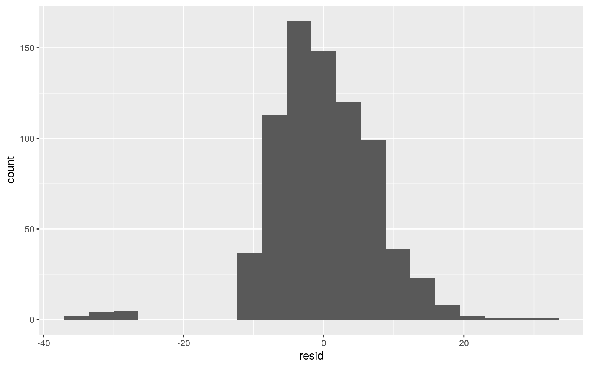

####Introduction
diabetes <- read.csv("~/diabetes.csv")
diabetes <- diabetes %>% select(Pregnancies, Glucose, BloodPressure, SkinThickness, Insulin, BMI, Age, Outcome)
head(diabetes)## Pregnancies Glucose BloodPressure SkinThickness Insulin
BMI Age Outcome
## 1 6 148 72 35 0 33.6 50 1
## 2 1 85 66 29 0 26.6 31 0
## 3 8 183 64 0 0 23.3 32 1
## 4 1 89 66 23 94 28.1 21 0
## 5 0 137 40 35 168 43.1 33 1
## 6 5 116 74 0 0 25.6 30 0The dataset diabetes was acquired from https://www.kaggle.com/datasets. The dataset was obtained from the National Institute of Diabetes and Digestive and Kidney Diseases, which was used to predict whether a patient has diabetes based on diagnostic measurements. The patients are all females from Pima Indian heritage who are at least 21 years old. Variables in the dataset includes number of times pregnant, glucose concentration, diastolic blood pressure (mmHg), tricep skin thickness (mm), insulin levels (muIU/mL), BMI (kg/m^2), age, and the categorical and binary variable of the outcome (1-diabetes or 0-no diabetes). There are 768 observations of 8 variables in the dataset.
####MANOVA testing
library(lmtest)
library(sandwich)
library(plotROC)
library(tidyverse)
library(MASS)
library(glmnet)
library(ggplot2)
manova <- manova(cbind(Glucose,BloodPressure,SkinThickness,Insulin,BMI,Age)~Pregnancies,data=diabetes)
summary(manova)## Df Pillai approx F num Df den Df Pr(>F)
## Pregnancies 1 0.29917 54.142 6 761 < 2.2e-16 ***
## Residuals 766
## ---
## Signif. codes: 0 '***' 0.001 '**' 0.01 '*' 0.05 '.' 0.1
' ' 1summary.aov(manova)## Response Glucose :
## Df Sum Sq Mean Sq F value Pr(>F)
## Pregnancies 1 13141 13140.6 13.057 0.0003219 ***
## Residuals 766 770924 1006.4
## ---
## Signif. codes: 0 '***' 0.001 '**' 0.01 '*' 0.05 '.' 0.1
' ' 1
##
## Response BloodPressure :
## Df Sum Sq Mean Sq F value Pr(>F)
## Pregnancies 1 5736 5735.8 15.601 8.542e-05 ***
## Residuals 766 281619 367.6
## ---
## Signif. codes: 0 '***' 0.001 '**' 0.01 '*' 0.05 '.' 0.1
' ' 1
##
## Response SkinThickness :
## Df Sum Sq Mean Sq F value Pr(>F)
## Pregnancies 1 1302 1301.91 5.1437 0.02361 *
## Residuals 766 193879 253.11
## ---
## Signif. codes: 0 '***' 0.001 '**' 0.01 '*' 0.05 '.' 0.1
' ' 1
##
## Response Insulin :
## Df Sum Sq Mean Sq F value Pr(>F)
## Pregnancies 1 55083 55083 4.1645 0.04162 *
## Residuals 766 10131582 13227
## ---
## Signif. codes: 0 '***' 0.001 '**' 0.01 '*' 0.05 '.' 0.1
' ' 1
##
## Response BMI :
## Df Sum Sq Mean Sq F value Pr(>F)
## Pregnancies 1 15 14.908 0.2396 0.6246
## Residuals 766 47662 62.222
##
## Response Age :
## Df Sum Sq Mean Sq F value Pr(>F)
## Pregnancies 1 31432 31431.8 322.54 < 2.2e-16 ***
## Residuals 766 74647 97.4
## ---
## Signif. codes: 0 '***' 0.001 '**' 0.01 '*' 0.05 '.' 0.1
' ' 1CatPreg <- cut(diabetes$Pregnancies, breaks = c(0,5,15), labels=c("low","high"), right=FALSE)
pairwise.t.test(diabetes$Glucose,CatPreg,p.adj="none")##
## Pairwise comparisons using t tests with pooled SD
##
## data: diabetes$Glucose and CatPreg
##
## low
## high 0.0011
##
## P value adjustment method: nonepairwise.t.test(diabetes$BloodPressure,CatPreg,p.adj="none")##
## Pairwise comparisons using t tests with pooled SD
##
## data: diabetes$BloodPressure and CatPreg
##
## low
## high 1.2e-05
##
## P value adjustment method: nonepairwise.t.test(diabetes$SkinThickness,CatPreg,p.adj="none")##
## Pairwise comparisons using t tests with pooled SD
##
## data: diabetes$SkinThickness and CatPreg
##
## low
## high 0.018
##
## P value adjustment method: nonepairwise.t.test(diabetes$Insulin,CatPreg,p.adj="none")##
## Pairwise comparisons using t tests with pooled SD
##
## data: diabetes$Insulin and CatPreg
##
## low
## high 0.032
##
## P value adjustment method: nonepairwise.t.test(diabetes$Age,CatPreg,p.adj="none")##
## Pairwise comparisons using t tests with pooled SD
##
## data: diabetes$Age and CatPreg
##
## low
## high <2e-16
##
## P value adjustment method: none#Type-1 error
1-(0.95)^12## [1] 0.4596399#Bonferroni 1 MAN, 6 ANOVA, 5 pairwise = 12
0.05/12## [1] 0.004166667pairwise.t.test(diabetes$Glucose,CatPreg,p.adj="bonf")##
## Pairwise comparisons using t tests with pooled SD
##
## data: diabetes$Glucose and CatPreg
##
## low
## high 0.0011
##
## P value adjustment method: bonferronipairwise.t.test(diabetes$BloodPressure,CatPreg,p.adj="bonf")##
## Pairwise comparisons using t tests with pooled SD
##
## data: diabetes$BloodPressure and CatPreg
##
## low
## high 1.2e-05
##
## P value adjustment method: bonferronipairwise.t.test(diabetes$SkinThickness,CatPreg,p.adj="bonf")##
## Pairwise comparisons using t tests with pooled SD
##
## data: diabetes$SkinThickness and CatPreg
##
## low
## high 0.018
##
## P value adjustment method: bonferronipairwise.t.test(diabetes$Insulin,CatPreg,p.adj="bonf")##
## Pairwise comparisons using t tests with pooled SD
##
## data: diabetes$Insulin and CatPreg
##
## low
## high 0.032
##
## P value adjustment method: bonferronipairwise.t.test(diabetes$Age,CatPreg,p.adj="bonf")##
## Pairwise comparisons using t tests with pooled SD
##
## data: diabetes$Age and CatPreg
##
## low
## high <2e-16
##
## P value adjustment method: bonferroniA MANOVA test was conducted to determine the effect of number of pregnancies on the person’s glucose concentration, blood pressure, skin thickness, insulin, BMI, and age. After running the test, it can be concluded that the variables are statistically significant from each other since the p value is less than 0.05. Since the results were significant, a univariate ANOVA was conducted. The results from the ANOVA showed significance from pregnancies for all the variables, except for BMI.
Post-hoc t-tests were run for all the variables to determine which category of number of pregnancies (low=0-5, high=6-15) differed in each variable. Given the p-values, it is concluded that low and high number of pregnancies are significantly different with only the BMI variable, but are not significantly different from the other five variables.
A total of 12 tests were performed (1 MANOVA, 6 ANOVA, 5 pairwise). The probability of a Type 1 error occuring was 0.4596399 or 45.96%. The Bonferroni adjusted significance level for 0.05 Type-1 error was 0.004166667. After adjusting for the significance level using the Bonferroni correction, the mean difference between low and high number of pregnancies remained the same for each of the variables as before the correction.
In conclusion, the assumptions for the MANOVA test were most likely not met because it has more assumptions that must be met such as having no extreme outliers, homogeneity, multivariate normality, etc.
Null: The mean age is the same (no difference) for patients with low and high number of pregnancies. Alternative: The mean age is different for patients with low and high number of pregnancies.
low<-diabetes%>%filter(CatPreg=="low")
high<-diabetes%>%filter(CatPreg=="high")
mean(high$Age)-mean(low$Age)## [1] 13.48608rand_dist<-vector()
for(i in 1:5000) {
new<-data.frame(Age=sample(diabetes$Age),condition=CatPreg)
rand_dist[i]<-mean(new[new$condition=="high",]$Age)-
mean(new[new$condition=="low",]$Age)}
t.test(data=diabetes, Age~CatPreg)##
## Welch Two Sample t-test
##
## data: Age by CatPreg
## t = -17.575, df = 508.36, p-value < 2.2e-16
## alternative hypothesis: true difference in means is not
equal to 0
## 95 percent confidence interval:
## -14.99366 -11.97851
## sample estimates:
## mean in group low mean in group high
## 28.38618 41.87226library(ggplot2)
hist(rand_dist, breaks = c(20,25,30,35,40,45,50,55,60,65,70,75,80,85,90,95,100), data=rand_dist);abline(v=-13.48608,col="red")The mean difference was calculated for the randomization test as 13.48608 years. The p-value was significant, therefore we can reject the null hypothesis. This indicates that the mean age is different for patients with low and high number of pregnancies.
diabetes_c <- diabetes
diabetes$Glucose <- diabetes_c$Glucose - mean(diabetes_c$Glucose, na.rm = T)
fit1 <-lm(BMI ~ Outcome * Glucose, data = diabetes)
summary(fit1)##
## Call:
## lm(formula = BMI ~ Outcome * Glucose, data = diabetes)
##
## Residuals:
## Min 1Q Median 3Q Max
## -34.956 -4.841 -0.512 4.439 32.098
##
## Coefficients:
## Estimate Std. Error t value Pr(>|t|)
## (Intercept) 30.72720 0.36382 84.458 < 2e-16 ***
## Outcome 4.18187 0.65449 6.390 2.89e-10 ***
## Glucose 0.03876 0.01285 3.015 0.00265 **
## Outcome:Glucose -0.02729 0.01929 -1.415 0.15752
## ---
## Signif. codes: 0 '***' 0.001 '**' 0.01 '*' 0.05 '.' 0.1
' ' 1
##
## Residual standard error: 7.506 on 764 degrees of freedom
## Multiple R-squared: 0.09716, Adjusted R-squared: 0.09362
## F-statistic: 27.41 on 3 and 764 DF, p-value: < 2.2e-16library(ggplot2)
library(interactions)
ggplot(diabetes, aes(x=Glucose, y=BMI, group=Outcome))+geom_point(aes(color=Outcome))+
geom_smooth(method="lm",se=F,fullrange=T,aes(color=Outcome)) + ggtitle("Interaction between Glucose and Diabetics on BMI") + xlab("Glucose Concentration (mmol/L)")resid <-fit1$residuals
fitvalue <- fit1$fitted.values
ggplot(diabetes, aes(x=Glucose, y=BMI)) + ggtitle("Interaction between Glucose and BMI")+ xlab("Glucose Concentration (mmol/L)")+ geom_point() + geom_smooth(method = "lm", se=F)#Homoskedasticity
ggplot()+geom_point(aes(fitvalue,resid))+geom_hline(yintercept=0, color='red') bptest(fit1)##
## studentized Breusch-Pagan test
##
## data: fit1
## BP = 1.0977, df = 3, p-value = 0.7776ggplot()+geom_histogram(aes(resid), bins=20)
ggplot()+geom_qq(aes(sample=resid))+geom_qq_line()shapiro.test(resid)##
## Shapiro-Wilk normality test
##
## data: resid
## W = 0.94468, p-value = 2.478e-16coeftest(fit1, vcov = vcovHC(fit1))##
## t test of coefficients:
##
## Estimate Std. Error t value Pr(>|t|)
## (Intercept) 30.727205 0.361177 85.0752 < 2.2e-16 ***
## Outcome 4.181875 0.655008 6.3845 2.984e-10 ***
## Glucose 0.038756 0.012412 3.1225 0.001861 **
## Outcome:Glucose -0.027291 0.018049 -1.5120 0.130942
## ---
## Signif. codes: 0 '***' 0.001 '**' 0.01 '*' 0.05 '.' 0.1
' ' 1summary(fit1)##
## Call:
## lm(formula = BMI ~ Outcome * Glucose, data = diabetes)
##
## Residuals:
## Min 1Q Median 3Q Max
## -34.956 -4.841 -0.512 4.439 32.098
##
## Coefficients:
## Estimate Std. Error t value Pr(>|t|)
## (Intercept) 30.72720 0.36382 84.458 < 2e-16 ***
## Outcome 4.18187 0.65449 6.390 2.89e-10 ***
## Glucose 0.03876 0.01285 3.015 0.00265 **
## Outcome:Glucose -0.02729 0.01929 -1.415 0.15752
## ---
## Signif. codes: 0 '***' 0.001 '**' 0.01 '*' 0.05 '.' 0.1
' ' 1
##
## Residual standard error: 7.506 on 764 degrees of freedom
## Multiple R-squared: 0.09716, Adjusted R-squared: 0.09362
## F-statistic: 27.41 on 3 and 764 DF, p-value: < 2.2e-16When there is no interaction between outcome of diabetes and glucose concentration, the intercept estimate of 30.72720 is the average BMI. The coefficient estimate of 4.18187 is the amount that the average BMI increases when the patient has diabetes. The coefficient estimate of 0.03876 is the amount that the average BMI increases with the increase in one mmol/L of glucose concentration. The coefficient estimate of -0.02729 is the amount that the average BMI decreases if the patient had diabetes and glucose concentration decreases. After plotting the data, it is clear that there is a relatively linear relationship between glucose concentration and BMI. The histogram data seemed quite off with a random break on the distribution, therefore there is no say that there is much of a normal distribution. According to the Breusch-Pagan Test, the p-value was not significant (0.7776), therefore we fail to reject the null hypothesis. On the other hand, the Shapiro-Wilk test shows a significant p-value (2.478e-16), meaning that the null hypothesis of normality was rejected. Although there were contrasting outcomes for the Breusch-Pagan Test and Shapiro-Wilk test, the linearity assumptions were relatively met, but the assumptions for homoskedasticity and the assumptions for normality were not met. The regression results was recomputed with robust standard errors. The coefficient estimates did not change, however the standard errors and t-values slightly changed. The proportion of variation from the R-squared value is 0.09716. The adjusted R-squared is slightly lower at 0.09362. The slight difference in R-squared values shows that the variation in BMI is explained by the model.
samp_dist<-replicate(5000, {
boot_dat<-diabetes_c[sample(nrow(diabetes_c),replace=TRUE),]
fit2<-lm(BMI ~ Outcome * Glucose, data=boot_dat)
coef(fit2)
})
samp_dist%>%t%>%as.data.frame%>%summarize_all(sd)## (Intercept) Outcome Glucose Outcome:Glucose
## 1 1.430785 2.440469 0.01250297 0.01811265fit3<-lm(BMI ~ Outcome * Glucose, data=diabetes_c)
resids <-fit3$residuals
fitted <- fit3$fitted.values
resid_resamp<-replicate(5000,{
new_resids<-sample(resids,replace=TRUE)
diabetes_c$new_y<-fitted+new_resids
fit3<-lm(new_y ~ Outcome * Glucose, data=diabetes_c)
coef(fit3)
})
resid_resamp%>%t%>%as.data.frame%>%summarize_all(sd)## (Intercept) Outcome Glucose Outcome:Glucose
## 1 1.428619 2.524828 0.01264281 0.01913047After rerunning the same regression model with bootstrapped standard errors by resampling residuals, it was concluded that the new standard errors from bootstrapped model were slightly lower and higher than the standard errors from the original and robust standard errors. On the other hand, the new standard errors from the residual resampling had lower standard errors for all variables.
library(lmtest)
diabetes_c <-diabetes_c %>%mutate(y=as.numeric(Outcome=="1"))
fit4<-glm(y ~ Age + Glucose,data=diabetes_c,family=binomial(link="logit"))
coeftest(fit4)##
## z test of coefficients:
##
## Estimate Std. Error z value Pr(>|z|)
## (Intercept) -5.9124491 0.4626197 -12.7804 < 2.2e-16 ***
## Age 0.0247784 0.0073737 3.3604 0.0007784 ***
## Glucose 0.0356440 0.0032900 10.8341 < 2.2e-16 ***
## ---
## Signif. codes: 0 '***' 0.001 '**' 0.01 '*' 0.05 '.' 0.1
' ' 1exp(0.0247784)## [1] 1.025088exp(0.0356440)## [1] 1.036287diabetes_c$prob <- predict(fit4, type = "response")
table(predict=as.numeric(diabetes_c$prob > 0.5), truth=diabetes_c$y) %>% addmargins## truth
## predict 0 1 Sum
## 0 436 138 574
## 1 64 130 194
## Sum 500 268 768(436+130)/768 #accuracy## [1] 0.7369792436/574 #sensitivity TPR## [1] 0.7595819130/194 #specificity FPR## [1] 0.6701031130/268 #precision## [1] 0.4850746diabetes$logit<-predict(fit4)
diabetes$Outcome<-as.factor(diabetes$Outcome)
ggplot(diabetes, aes(logit, fill=Outcome)) + geom_density(alpha=.3) + geom_vline(xintercept=0,lty=2)ROCplot <- ggplot(diabetes_c) +geom_roc(aes(d=y, m=prob), n.cuts = 0) + geom_segment(aes(x=0, xend=1, y=0, yend=1))
ROCplotcalc_auc(ROCplot)## PANEL group AUC
## 1 1 -1 0.8007127After running the logistic regression model, when controlling for glucose concentration, there is a significant difference of age on the outcome of having diabetes. Furthermore, when controlling for age, there is a significant difference of glucose concentration on the outcome of having diabetes. When there is no interaction between age and glucose concentration, the intercept estimate of -1.6032792 is the chance of having diabetes. Every one year increase in age multiplies the patients odds of having diabetes by 1.025088, and every one unit increase in glucose concentration multiplies the patients odds of having diabetes by 1.036287. For the confusion matrix, the accuracy of the model is 0.7369792, which indicates the number of patients that are predicted to have no diabetes that actually doesn’t have diabetes. The sensitivity of the model is 0.7595819. The specificity of the model is 0.6701031. The precision of the model is 0.4850746. After computing the ROC curve, the AUC for the model was calculated to be 0.8007127. Since this is a relatively good AUC, it could be concluded that age and glucose concentrations are good indicators of the outcome of having diabetes.
fit5 <- glm(y ~ Pregnancies + Glucose + BloodPressure + SkinThickness + Insulin + BMI+ Age, data = diabetes_c, family = binomial(link = "logit"))
coeftest(fit5)##
## z test of coefficients:
##
## Estimate Std. Error z value Pr(>|z|)
## (Intercept) -8.06844738 0.69606108 -11.5916 < 2.2e-16
***
## Pregnancies 0.11772465 0.03169565 3.7142 0.0002038 ***
## Glucose 0.03517125 0.00366356 9.6003 < 2.2e-16 ***
## BloodPressure -0.01363704 0.00520759 -2.6187 0.0088270
**
## SkinThickness 0.00248090 0.00681937 0.3638 0.7160061
## Insulin -0.00097045 0.00088769 -1.0932 0.2742927
## BMI 0.09126424 0.01505635 6.0615 1.348e-09 ***
## Age 0.01628638 0.00927954 1.7551 0.0792448 .
## ---
## Signif. codes: 0 '***' 0.001 '**' 0.01 '*' 0.05 '.' 0.1
' ' 1diabetes_c$prob <- predict(fit5, type ="response")
table(predict=as.numeric(diabetes_c$prob>.5),truth=diabetes_c$y)%>% addmargins()## truth
## predict 0 1 Sum
## 0 439 112 551
## 1 61 156 217
## Sum 500 268 768(439+156)/768 #accuracy## [1] 0.7747396156/268 #sensitivity## [1] 0.5820896439/500 #specificity## [1] 0.878156/217 #precision## [1] 0.718894class_diag<-function(probs,truth){
tab<-table(factor(probs>.5,levels=c("FALSE","TRUE")),truth)
acc=sum(diag(tab))/sum(tab)
sens=tab[2,2]/colSums(tab)[2]
spec=tab[1,1]/colSums(tab)[1]
ppv=tab[2,2]/rowSums(tab)[2]
if(is.numeric(truth)==FALSE & is.logical(truth)==FALSE) truth<-as.numeric(truth)-1
ord<-order(probs, decreasing=TRUE)
probs <- probs[ord]; truth <- truth[ord]
TPR=cumsum(truth)/max(1,sum(truth))
FPR=cumsum(!truth)/max(1,sum(!truth))
dup<-c(probs[-1]>=probs[-length(probs)], FALSE)
TPR<-c(0,TPR[!dup],1); FPR<-c(0,FPR[!dup],1)
n <- length(TPR)
auc<- sum( ((TPR[-1]+TPR[-n])/2) * (FPR[-1]-FPR[-n]) )
data.frame(acc,sens,spec,ppv,auc)
}
#10-Fold CV
set.seed(1234)
k=10
data1<-diabetes_c[sample(nrow(diabetes_c)),]
folds<-cut(seq(1:nrow(diabetes_c)),breaks=k,labels=F)
diags<-NULL
for(i in 1:k){
train<-data1[folds!=i,]
test<-data1[folds==i,]
truth<-test$y
fit<-glm(y ~ Age + Glucose,data=train,family="binomial")
probs<-predict(fit,newdata = test,type="response")
diags<-rbind(diags,class_diag(probs,truth))
}
apply(diags,2,mean)## acc sens spec ppv auc
## 0.7370984 0.4872443 0.8750044 0.6819390 0.8022574library(glmnet)
fit6 <- diabetes%>%dplyr::select(Pregnancies,Glucose,BloodPressure,Insulin,BMI,Age,Outcome, SkinThickness)
y<-as.matrix(fit6$Outcome)
x<-model.matrix(Outcome~(.),data=fit6)[,-1]
cv<-cv.glmnet(x,y,family="binomial")
lasso<-glmnet(x,y,family="binomial",lambda=cv$lambda.1se)
coef(lasso)## 8 x 1 sparse Matrix of class "dgCMatrix"
## s0
## (Intercept) -2.109450540
## Pregnancies 0.048842362
## Glucose 0.024087846
## BloodPressure .
## Insulin .
## BMI 0.036323409
## Age 0.001019859
## SkinThickness .diabetes_new <- data.frame(diabetes_c$Pregnancies, diabetes_c$Glucose, diabetes_c$y)
data_new <- diabetes_new[sample(nrow(diabetes_new)), ]
folds <- cut(seq(1:nrow(diabetes_new)), breaks = k, labels = F)
diags <- NULL
for (i in 1:k) {
train <- data_new[folds != i, ]
test <- data_new[folds == i, ]
truth <- test$diabetes_c.y
fit <- lm(diabetes_c.y ~ ., data = train, family = "binomial")
probs <- predict(fit, newdata = test, type = "response")
diags <- rbind(diags, class_diag(probs, truth))
}
apply(diags,2,mean)## acc sens spec ppv auc
## 0.7526316 0.4932777 0.8905372 0.7073179 0.7993912After computing a logisitic regression for all the variables in the dataset, the accuracy was 0.5562355 for patients who are actually diabetic. The sensitivity was 0.8553846 which indicates number of predicted non-diabetics. The specificity was 0.1926134 which includes both diabetic and non-diabetic patients. The precision was 0.5628955 which indicates patients who are actually non-diabetic. The same model was used for a 10-fold CV. The accuracy was 0.5534955, which was slightly lower than the in-sample metrics. The sensitivity was 0.8752451. The specificity was 0.1650197. The precision was 0.5602152. The AUC was 0.5479474. All of the values were lower than those from the in-sample metrics. The lower AUC indicates that the model is bad and isn’t a great predictor of outcome of having diabetes. Furthermore, it shows signs of overfitting. From the LASSO regression, it is apparent that number of pregnancies and BMI are the most important predictors for the model and the rest are noise. The accuracy was 0.7526316, which was slightly higher than the logistic regressions. The sensitivity was 0.4932777. The specificity was 0.8905372. The precision was 0.7073179. The AUC was 0.7993912 The slightly higher AUC indicates that the model is a good fit and that number of pregnancies and glucose concentration is a good predictor of outcome of diabetes.
data(package = .packages(all.available = TRUE))…